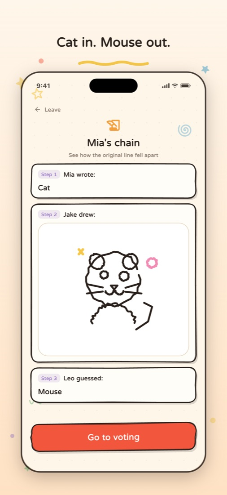

Pick a mode and a word pack
Classic, Custom Words, Relay Drawing or a telephone mode — then choose a word pack and difficulty.
A one-phone drawing & guessing party game
One person draws, everyone else guesses — no letters, no talking. Pass the phone around, from classic guessing to telephone chains.

HOW TO PLAY
First time? Pick Classic mode with an easy word pack. Draw the key feature — it doesn't need to look good.
Classic, Custom Words, Relay Drawing or a telephone mode — then choose a word pack and difficulty.
The artist sees the word and draws on the phone. No letters, no talking — 60 seconds by default.
Everyone shouts answers; a correct guess passes the pen on. In telephone modes you replay the whole chain at the end.
IN THE GAME


WHY THIS APP
Pass it around at dinners, parties, orientation or camping. Works offline.
Classic, Custom Words, Relay Drawing plus four telephone modes — good for small and big groups.
Animals, food, jobs, sports and local packs, in three difficulty levels.
Add jokes from friends, work or class; Custom Words mode uses only your prompts.
GAME MODES
Beyond the classic “one draws, everyone guesses”, there are several modes for different group sizes — all on one phone:
Every mode ends with a history screen where you can look back at everyone's drawings. Online play is coming later.
WORD LIST
A good prompt is easy to draw and easy to guess. These come straight from the app, which includes over 600 words in three difficulty levels.
Simple shapes you can sketch in a few strokes — great for kids and first-timers.
| Word (English) | 中文 |
|---|---|
| Cat | 貓 |
| Apple | 蘋果 |
| Umbrella | 雨傘 |
| Soccer | 足球 |
| Bus | 公車 |
| School | 學校 |
| Beef Noodle Soup | 牛肉麵 |
| Doctor | 醫生 |
You have to think about how to break the idea down.
| Word (English) | 中文 |
|---|---|
| Penguin | 企鵝 |
| Dolphin | 海豚 |
| Squirrel | 松鼠 |
| Hippo | 河馬 |
| Whale | 鯨魚 |
| Ant | 螞蟻 |
| Raccoon | 浣熊 |
| Pigeon | 鴿子 |
Abstract or complicated — both the artist and the guessers have to think.
| Word (English) | 中文 |
|---|---|
| Chameleon | 變色龍 |
| T-Rex | 暴龍 |
| Cheetah | 獵豹 |
| Anteater | 食蟻獸 |
| Avatar | 阿凡達 |
| Beauty and the Beast | 美女與野獸 |
Parties, family dinners, holidays, team events, orientation, camps, class activities, camping nights — even while waiting for a ride. No pen, paper or whiteboard needed: one phone passed around is enough, and it works offline.
Free to download, with 20 words per pack to start. The full version is a one-time purchase that unlocks every word and removes ads. Switching phones? Tap “Restore Purchases” in the app.
FAQ
One player draws a secret word on the phone — no letters, no talking — and everyone else tries to guess it before time runs out. Pass the phone to the next artist after each round. The default round is 60 seconds.
No. One phone passed around the table is all you need — no sign-up, no connection.
Over 600 words across animals, food & drinks, everyday objects, vehicles, movies & cartoons, jobs, places, sports and local packs. Each pack has easy, medium and hard words; a sample is listed below on this page.
Yes. Custom Words mode lets players enter their own prompts — perfect for inside jokes with friends, family or coworkers.
Yes — take turns drawing and guessing. For bigger groups, Relay Drawing and the telephone-style modes get funnier with more people.
It's better that way. The telephone modes (Draw Telephone, Copy Telephone, Draw & Guess Telephone, Telestrations-style) run on wobbly drawings and wrong guesses, then reveal the whole chain at the end.
The first player writes or draws a prompt, the next player only sees the previous result and draws or guesses from it, and so on. At the end you replay the chain and see where it all went wrong. Draw & Guess Telephone needs an even number of players: 4, 6, 8 or 10.
Free to download with 20 words per pack to start. The full version is a one-time purchase that unlocks every word and removes ads.
Currently iPhone and iPad only (iOS 15 or later). There is no web version. Online play is planned.
Pass one phone and start the next round.
Free downloadApp Store